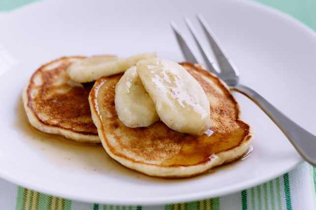

Caramel Banana Hotcakes

Description
Ingredients
- 1/2 cup self-raising flour
- 1 tablespoon brown sugar
- 1 egg
- 1/2 cup skim milk
- 2 small bananas
- olive oil cooking spray
Method
- Sift flour into a bowl. Add 2 teaspoons brown sugar. Using a fork, whisk egg and milk in a jug. Stir into flour mixture until just combined. Mash 1 banana and stir into flour mixture.
- Heat a large, non-stick frying pan over medium heat. Spray lightly with oil. Using 2 tablespoons batter per hotcake, cook hotcakes 2 at a time for 2 to 3 minutes or until bubbles appear on the surface. Turn over and cook for 2 minutes or until golden. Remove to a plate. Cover and keep warm. Repeat with remaining batter, spraying pan with oil between batches.
- Add remaining 2 teaspoons brown sugar to frying pan. Stir in 1/2 cup warm water. Cook, without stirring, for 3 minutes or until thickened slightly. Slice remaining banana into 12 pieces and add to frying pan. Cook for 1 minute or until just warmed through. Remove from heat. Turn banana to coat in sauce.
- Place 2 hotcakes on each plate. Top with banana and spoon over sauce. Serve.